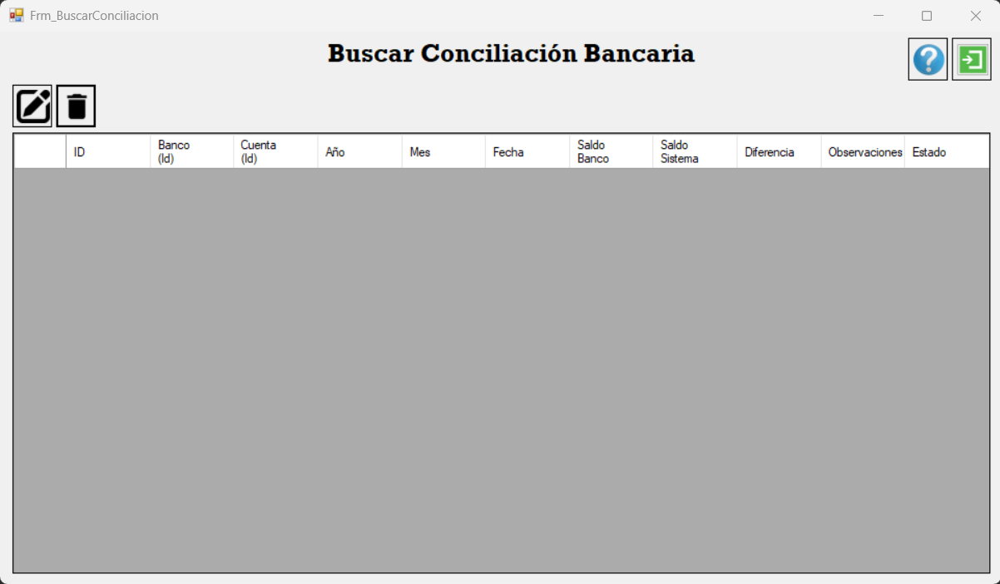
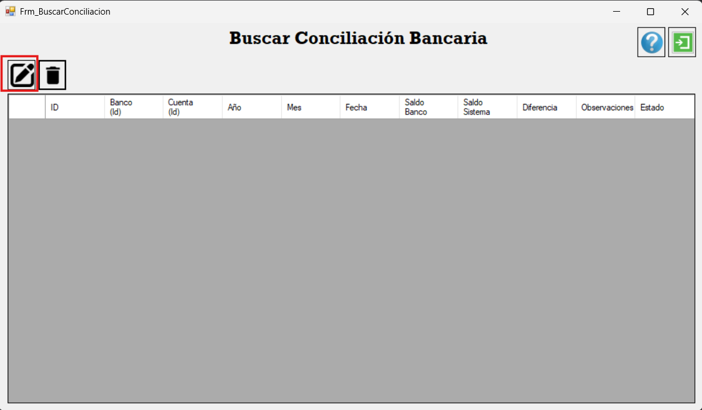
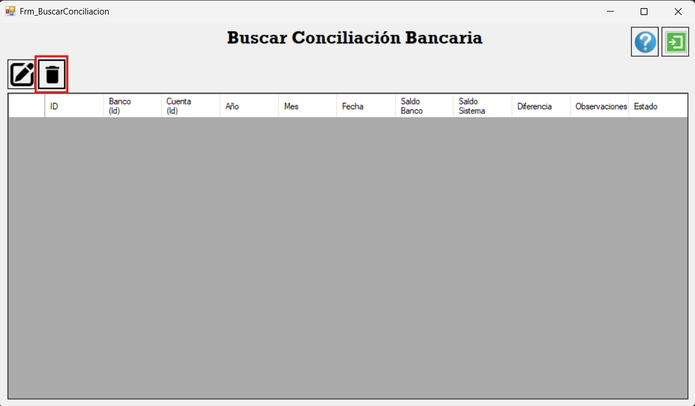
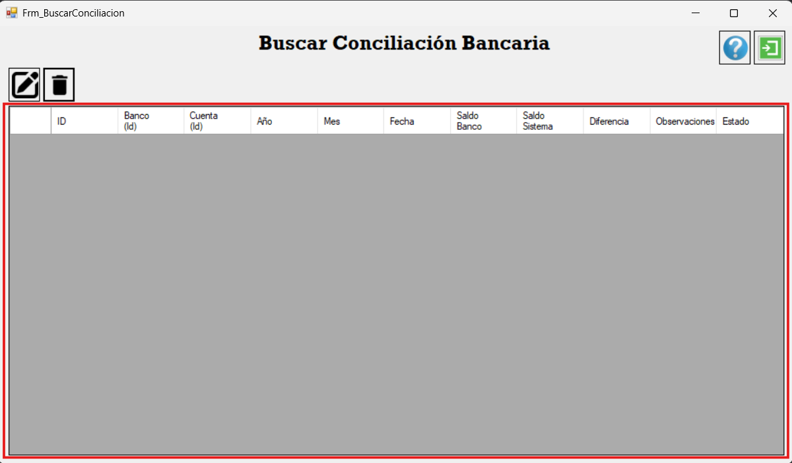
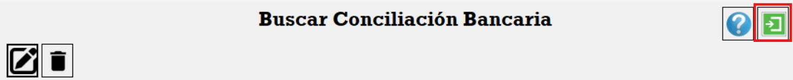

Formulario Buscar Conciliación
El formulario de Buscar Conciliación permite consultar, visualizar, modificar o eliminar conciliaciones bancarias que ya han sido registradas en el sistema.
Icono de Modificar
El Icono de Modificar abre nuevamente la conciliación seleccionada en el panel de información. Al hacer clic, se carga el formulario de Conciliación Bancaria con todos los datos para poder editarlos. Una vez realizadas las modificaciones, es necesario presionar el botón de guardar en el formulario principal.
Icono de Guardar (al modificar)
Después de modificar los datos de la conciliación, se utiliza el Icono de Guardar en el formulario de Conciliación Bancaria para actualizar la información ya existente.

Icono de Eliminar
El Icono de Eliminar sirve para borrar una conciliación seleccionada en el panel. Esta acción debe realizarse con cuidado, ya que elimina el registro de la base de datos.
Panel de Visualización de Conciliaciones
En el Panel de Visualización de Conciliaciones se muestran todas las conciliaciones realizadas. Desde aquí se puede seleccionar una conciliación específica para modificarla o eliminarla.
Salir de Buscar Conciliación
El ícono o botón de Salir cierra el formulario de Buscar Conciliación y vuelve a abrir el formulario principal de Conciliación Bancaria.
